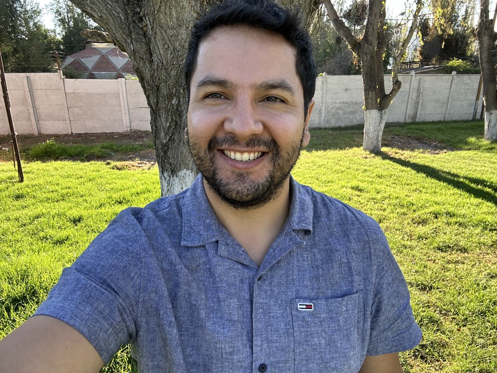

Glad you’re here.
I'm Gustavo Riffo, a Senior Software Engineer passionate about building reliable software and exploring the next frontier of artificial intelligence.
Connect on LinkedIn ↗01 / ABOUT
Always learning.
I believe great software is built with simplicity, curiosity, and craftsmanship. I'm currently deepening my knowledge of software architecture, distributed systems, and AI engineering, with a particular interest in autonomous agents and building intelligent, reliable applications. This is my little corner of the internet to share what I learn and build.
02 / PROJECTS
Things I'm exploring.
AI agents
Exploring agentic systems, RAG, orchestration, and LLM evaluation.
Software architecture
Deepening my understanding of scalable architectures, distributed systems, and engineering trade-offs.
This website
A personal space built with HTML, CSS and Cloudflare Workers.